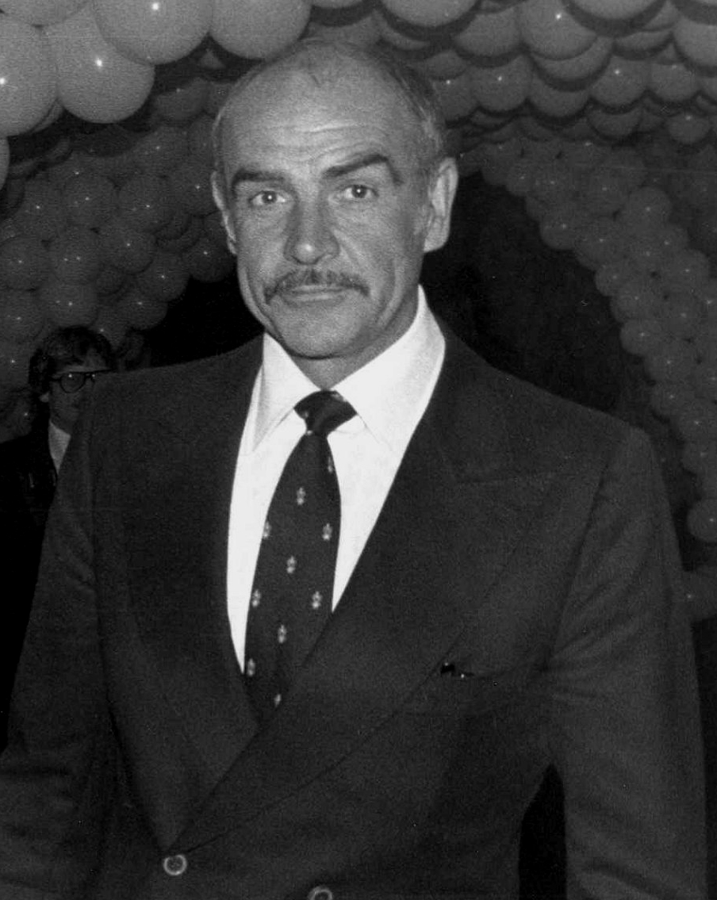

The tall, handsome and muscular Scottish actor Sean Connery is best known as the original actor to portray James Bond in the hugely successful movie franchise, starring in seven films between 1962 and 1983. Some believed that such a career-defining role might leave him unable to escape it, but he proved the doubters wrong, becoming one of the most notable film actors of his generation, with a host of great movies to his name. This arguably culminated in his greatest acclaim in 1988, when Connery won the Academy Award for Best Supporting Actor for his role as an Irish cop in Неприкасаемые (1987), stealing the thunder from the movie's principal star Kevin Costner. Connery was polled as "The Greatest Living Scot" and "Scotland's Greatest Living National Treasure". In 1989, he was proclaimed "Sexiest Man Alive" by People magazine, and in 1999, at age 69, he was voted "Sexiest Man of the Century."
Commander James Bond CMG RNVR is a character created by the British journalist and novelist Ian Fleming in 1953. He is the protagonist of the James Bond series of novels, films, comics and video games. Fleming wrote twelve Bond novels and two short story collections. His final two books—The Man with the Golden Gun (1965) and Octopussy and The Living Daylights (1966)—were published posthumously. The character is a Secret Service agent, code number 007, residing in London but active internationally. Bond was a composite character who was based on a number of commandos whom Fleming knew during his service in the Naval Intelligence Division during the Second World War, to whom Fleming added his own style and a number of his own tastes; Bond's name may have been appropriated from the American ornithologist of the same name, although Fleming got the name from a Welsh agent he served with, James C. Bond. Bond has a number of consistent character traits which run throughout the books, including an enjoyment of cars, a love of food, drink and love-making, and an average intake of sixty custom-made cigarettes a day.
JAMES BOND MOVIES